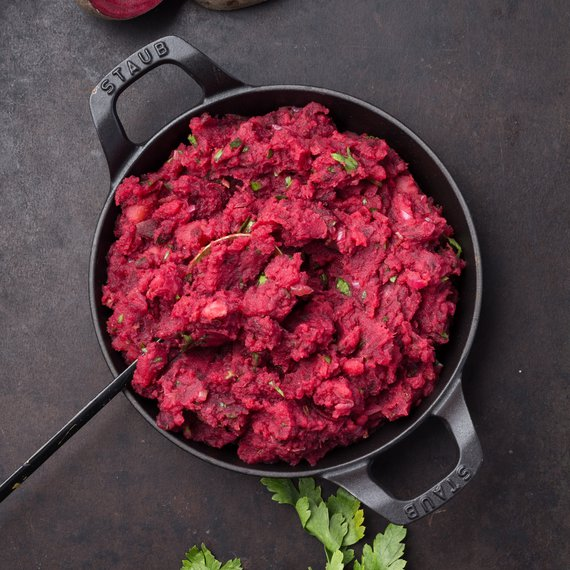

mashed potatoes with beetroot

description
bloody hell potatoes, can be added with spring onion or parsley
ingredients
for 4 servings
- 400g beetroot
- 200g potatoes
- 2 teaspoons of rapeseed oil
- 2 onions
- spring onion or parsley (can be dried)
- 50g butter
- salt
steps
- we will cook beets and potatoes.
- in the meantime, finely fry the chopped onion in a teaspoon of rapeseed oil.
- finely grate the boiled beetroot.
- mash the potatoes and add beetroot with onion and spring onion or parsley to them.
- salt the whole mixture and add butter.